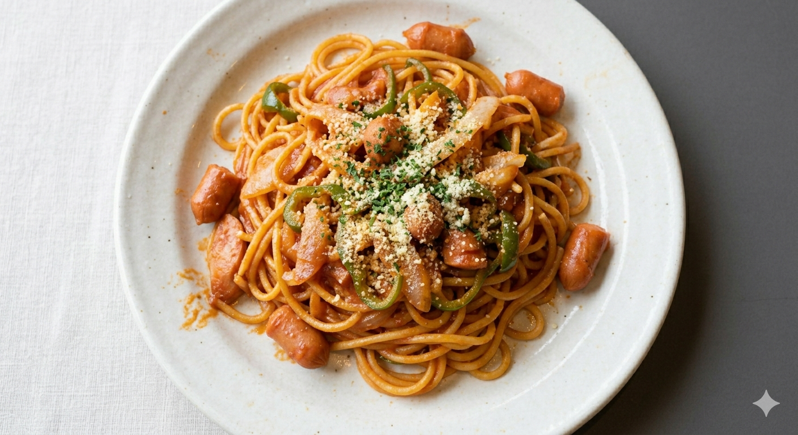
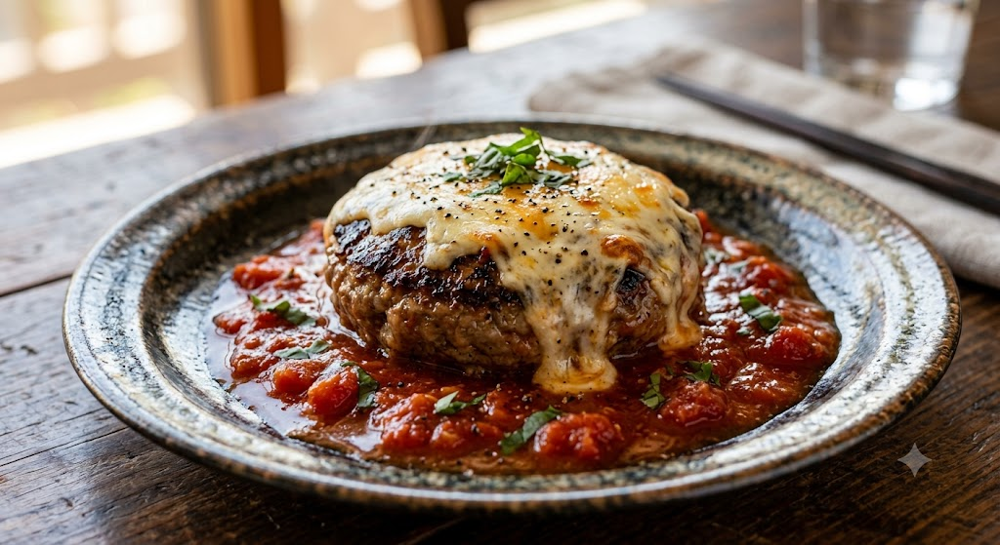
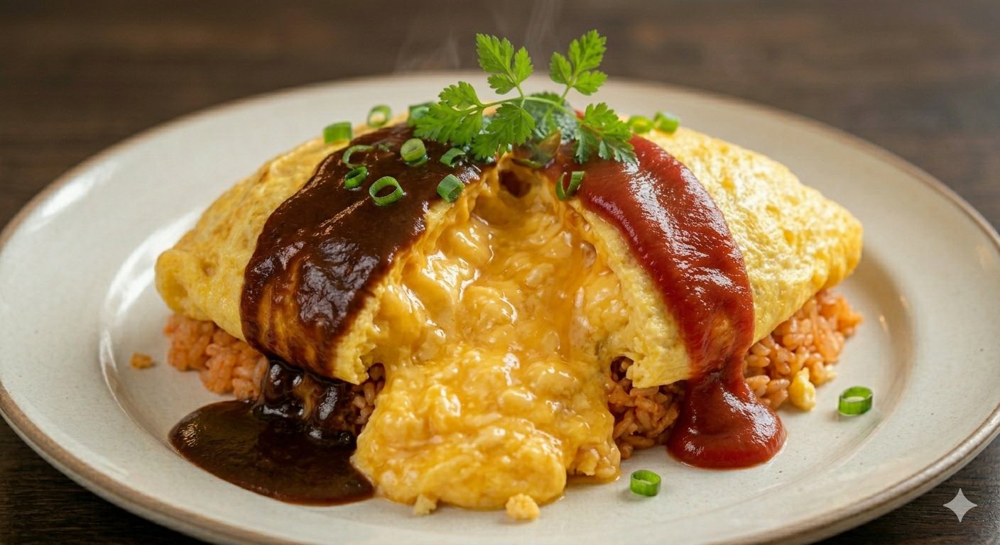
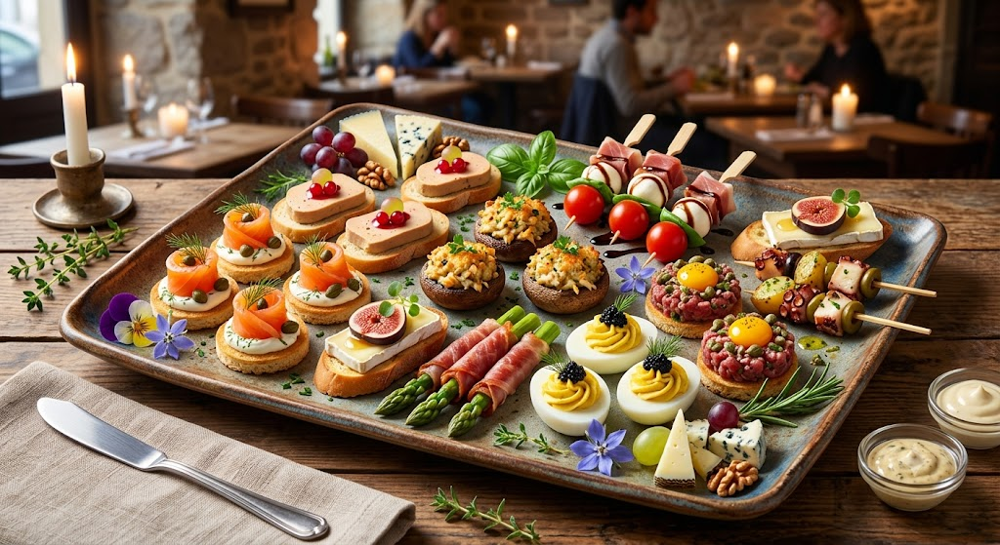

一口食べれば心がほどける、
団地の中で見つけた小さな幸せ。

名物！
濃厚ナポリタン
びえーたの推しメニューを紹介！
一度食べたら忘れられない、コク深い濃厚ソース。ガーリックトーストとのセットが最強です。

肉厚でしっかりとした食感のハンバーグ。とろ〜りチーズとトマトソースの相性が抜群。

お子様にも大人気！卵の優しさと手作りソースが絶妙なハーモニーを奏でます。
端城・仙台。普通の住宅街にひっそりと佇むお店ですが、私たちのこだわりはどこにも負けません。 一つ一つ丁寧に、手作りの味。自家焙煎のコーヒーまで、お客様の「明日も頑張ろう！」という笑顔のために用意しています。
—— 店主：さち

店舗所在地
〒981-3102 宮城県仙台市泉区向陽台2丁目27
※店前に駐車場完備しております。
営業時間
11:30 〜 14:30（12:30まで予約優先）
定休日：日曜日